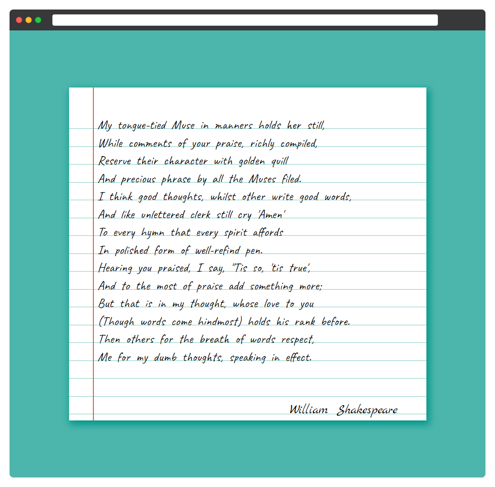

В этом испытании вам предстоит реализовать вёрстку 85 сонета Уильяма Шекспира в виде рукописного текста на листке бумаги. Вся вёрстка уже готова в файле index.html. Ваша задача — создать стили бумаги с помощью градиента

Задание
Подключите шрифты Caveat и Marck Script.
Блок notebook
- Размеры:
750(ширина) на700(высота) пикселей - Внутренний отступ сверху:
50пикселей. Отступ не должен увеличивать размер блока
Блок paper
- Блок занимает всю доступную высоту
- Внутренние отступы: по
60пикселей слева и справа - Размер шрифта и межстрочный интервал находятся в соответствующих переменных
- Блок имеет градиент, имитирующий полоски тетради. Градиент состоит из двух цветов: белый
#ffffffи зелёный#80cbc4. Подумайте, как создать полосы с помощью точек остановки
pre
- Внешние отступы: 0
- Внутренний отступ сверху: 10 пикселей
- Шрифт:
Caveat
Блок author
- Шрифт:
Marck Script - Выравнивание текста: по правому краю
Подсказки
- Точки остановки градиента имеют прямую зависимость от межстрочного интервала. Размер зелёной линии: 1 пиксель
- Браузер Firefox, для корректного отображения, требует наличие свойства
background-size. Тесты проходят в браузере Chrome, где это свойство не требуется. Поэтому лучше проходить задание именно в этом браузере - Calc()